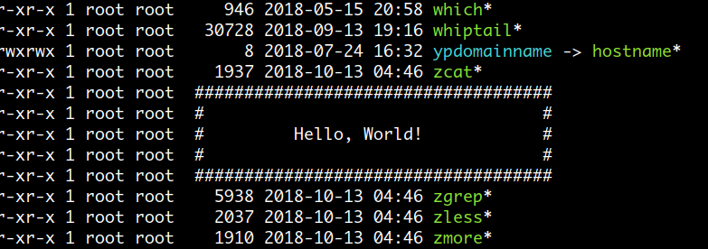

Colors
ASCII 챠트에서 0x20 이하 문자들과 0x7F 는 A B C 1 2 3 와같이 화면에 표시되는 모양은 없지만 라인개행을 한다든지 backspace 로 문자를 삭제하는 등의 기능을 하는 control 문자입니다. 그 외 function 키나 방향키에 대한 값 들은 특수한 방법을 이용해 전송하는데요. 방법은 ascii 챠트에서 escape 문자에 해당하는 0x1b 문자를 먼저 보내고 뒤에 관련된 문자들(sequence)를 전송합니다 ( 그래서 escape sequences 라고 부릅니다 )
escape sequences 를 이용하면 터미널에서 color 를 출력하거나 font styling 을 설정할 수 있고 텍스트를 출력할 때 cursor 의 위치를 마음대로 조정할 수가 있습니다. 이 escape sequences 는 회사별로 다른 값을 사용하는 경우가 많았는데 1970 년에 표준을 정한 것이 ANSI escape sequences 입니다. 현재는 옛날처럼 직접 터미널 장치를 사용하는 경우는 없지만 terminal emulators 나 command consoles 에서 계속 사용되고 있습니다.
od 명령을 이용해 function 키와 방향키를 눌렀을때의 키값을 조회해 보면 제일앞에 0x1b (esc) 문자가 나오는것을 볼 수 있습니다.
$ od -tax1 [enter]
^[OP^[OQ^[OR^[[A^[[B # f1 ~ f3 키, 위 아래 방향키를 누르고 [enter]
0000000 esc O P esc O Q esc O R esc [ A esc [ B nl
1b 4f 50 1b 4f 51 1b 4f 52 1b 5b 41 1b 5b 42 0a
# ctrl-d 로 종료
Color 표시를 위한 escape sequences
escape seqeunces 를 이용해 color 를 표시할 때는 다음과 같은 규칙을 따릅니다.
1. escape
- escape 문자는 다음 중에 하나를 사용할 수 있습니다.
\e , \x1b (16진수) , \033 (8진수)
- 또는 Ctrl-v + esc 키를 이용해 직접 escape 문자를 입력
$ echo -n ^[ | od -tax1
0000000 esc
1b
2. [
시작을 나타냅니다.
3. style; foreground; background
style 값은 여러개를 적을 수 있습니다.
4. m
종료를 나타냅니다.
Color, Style 속성값
다음은 16 color terminal 에 적용할 수 있는 값입니다. style 값은 10 보다 작고 foreground 값은 30 번대, background 값은 40 번대를 사용하는 것을 알 수 있습니다. 값만으로 구분이 가능하므로 순서에 상관없이 적을 수 있습니다.
# Style
0 — Reset all attributes # 이전에 적용했던 속성을 reset 합니다.
1 — Bright
2 — Dim
4 — Underscore
5 — Blink
7 — Reverse # foreground 와 background 색상이 서로 바뀌어 표시됩니다.
8 — Hidden # 스트링이 보이지 않게됩니다.
# Foreground
30 — Black
31 — Red
32 — Green
33 — Yellow
34 — Blue
35 — Magenta
36 — Cyan
37 — White
# Background
40 — Black
41 — Red
42 — Green
43 — Yellow
44 — Blue
45 — Magenta
46 — Cyan
47 — White
사용예 )
# \e 문자 처리를 위해 echo 명령에서 -e 옵션을 사용합니다.
echo -e "\e[31m red foreground\e[0m"
echo -e "\e[31;43m red foreground; yellow background\e[0m"
echo -e "\e[1;31;43m bright style; red foreground; yellow background\e[0m"
# 먼저 reset 한 후에 속성을 적용합니다.
echo -e "\e[0;31m reset; red foreground\e[0m"
echo -e "\e[0;31;44m reset; red foreground; blue background\e[0m"
# bright style 도 추가합니다.
echo -e "\e[01;31;44m reset, bright style; red foreground; blue background\e[0m"
echo -e "\e[0;1;31;44m reset, bright style; red foreground; blue background\e[0m"
# 다음에 이어지는 스트링에는 속성이 적용되지 않게 reset 합니다.
echo -e "\e[0m"
스크립트로 전체 색상 프린트 해보기
#!/bin/bash
for fgcolor in {30..37} ; do
for bgcolor in {40..47}; do
for style in 0 1 2 4 5 7; do
echo -en "\e[${style};${fgcolor};${bgcolor}m"
echo -n " ${style};${fgcolor};${bgcolor} "
echo -en "\e[0m"
done
echo
done
echo
done
-------------------------------------------------------
#!/bin/bash
for fgcolor in {30..37} {90..97} 39 ; do
for bgcolor in {40..47} {100..107} 49 ; do
for style in 0 1 2 4 5 7 ; do
echo -en "\e[${style};${bgcolor};${fgcolor}m"
echo -n " ${style};${bgcolor};${fgcolor} "
echo -en "\e[0m"
done
echo
done
done
tput 명령을 이용한 설정
실제 터미널 장치가 메인프레임에 연결되어 사용되던 과거에는 터미널의 종류가 한두 가지가 아니었을 것이라는 것은 쉽게 짐작할 수 있습니다. 각각의 터미널 장치들은 제공하는 기능도 달랐고 control characters, escape seqeunces 를 이용한 commands 들도 틀렸다고 합니다. 그래서 이와같은 터미널들의 정보를 라이브러리로 만들어놓은 것이 terminfo (termcap 의 새로운 버전) 입니다 (우분투의 경우 /lib/terminfo 에서 볼수있습니다). terminfo 라이브러리를 이용하면 device independent 한 방법으로 프로그램 할 수 있습니다.
tput 명령은 현재 터미널의 terminfo 정보를 이용해 값을 설정하므로 터미널 종류가 다른 환경에서도 동일하게 적용될 수 있습니다.
# foreground color 적용
tput setaf {color숫자}
# background color 적용
tput setab {color숫자}
# Style 속성 적용
tput bold – Set bold mode
tput dim – turn on half-bright mode
tput smul – begin underline mode
tput rmul – exit underline mode
tput rev – Turn on reverse mode
tput smso – Enter standout mode (bold on rxvt)
tput rmso – Exit standout mode
tput sgr0 – Turn off all attributes ( '\e[0m' 와 같은 기능 )
# Color 값
0 – Black
1 – Red
2 – Green
3 – Yellow
4 – Blue
5 – Magenta
6 – Cyan
7 – White
tput 명령은 매 실행시마다 terminfo 라이브러리를 조회하므로 속도가 느리다는 단점이 있습니다. 그러므로 먼저 사용되는 속성값들을 변수에 저장해 놓고 사용하는 것이 좋습니다.
사용예 )
color_reset=$(tput sgr0)
color_f_red=$(tput setaf 1)
color_b_blue=$(tput setab 4)
color_s_bold=$(tput bold)
color_my1=$(tput setaf 1)$(tput setab 4)
color_my2=$(tput bold)$(tput setaf 1)$(tput setab 4)
echo "${color_f_red}red foreground${color_reset}"
echo "${color_b_blue}blue background${color_reset}"
echo "${color_s_bold}bold style${color_reset}"
echo "${color_my1}red foreground, blue background${color_reset}"
echo "${color_my2}bold style, red foreground, blue background${color_reset}"
다음은 test 명령을 사용하여 출력이 터미널로 될경우만 속정을 적용합니다.
color_reset=$(tput sgr0)
color_red=$(tput setaf 1)
color_blue=$(tput setaf 4)
err () {
[ -t 2 ] && echo -n $color_red
echo "ERROR : $@"
[ -t 2 ] && echo -n $color_reset
} >& 2
msg () {
[ -t 1 ] && echo -n $color_blue
echo "MESSAGE : $@"
[ -t 1 ] && echo -n $color_reset
}
msg "stdout normal message"
err "stderr error message"
echo DONE.
스크립트로 전체 색상 프린트 해보기
#!/bin/bash
for fgcolor in {0..7} ; do
for bgcolor in {0..7}; do
for attr in sgr0 bold dim smul rev; do
echo -n "$(tput $attr)$(tput setaf $fgcolor)$(tput setab $bgcolor)"
echo -n " $attr;$fgcolor;$bgcolor "
echo -n "$(tput sgr0)"
done
echo
done
echo
done
Cursor Controls
보통 명령을 실행하면 출력과 함께 커서가 아래 방향으로 진행을 하는데요. 따라서 기본적으로 다른 위치에는 정보를 표시할 수 없습니다. 하지만 terminfo 를 이용하면 현재 터미널 화면의 원하는 위치에 정보를 표시할 수 있습니다. 다음은 현재 터미널의 중앙에 메시지를 출력하는 예입니다.
터미널 에서 커서 좌표는 좌측 상단이 (0, 0) 으로 시작합니다.
tput 명령에서 사용된 인수와 관련된 정보는man terminfo와 메뉴얼 에서 조회할 수 있습니다.
#!/bin/bash
COLUMNS=`tput cols` # 현재 터미널 화면의 lines, columns 수를 구합니다.
LINES=`tput lines`
line=$(( ( LINES - 5 ) / 2 )) # 5 는 메시지 박스 높이
column=$(( ( COLUMNS - 36 ) / 2 )) # 36 은 메시지 박스 넓이
# 메시지 출력 후 기존 위치로 돌아오기 위해 현재 커서 위치를 저장합니다.
tput sc # sc : save current cursor position
# 출력을 위해 커서를 $line $column 위치로 이동합니다.
tput cup $line $column # cup : move cursor to row #1, column #2 of screen
nl1=`tput cup $((line + 1)) $column` # 커서를 1 라인씩 아래로 이동합니다.
nl2=`tput cup $((line + 2)) $column`
nl3=`tput cup $((line + 3)) $column` # 명령 치환은 subshell 에서 실행되므로
nl4=`tput cup $((line + 4)) $column` # $((line += 1)) 또는 $((++line)) 형식은
nl5=`tput cup $((line + 5)) $column` # 사용할 수 없습니다.
printf "####################################$nl1";
printf "# #$nl2";
printf "# Hello, World! #$nl3";
printf "# #$nl4";
printf "####################################$nl5";
# 커서를 이전에 저장해놓은 위치로 이동합니다.
tput rc # rc : restore cursor to position of last save_cursor

여러 개의 라인을 동시에 갱신하는 효과도 만들 수 있습니다.
다음은 먼저 4 개의 라인을 출력한 다음 tput cuu1 을 이용해 커서를
한 라인씩 올리면서 tput el 를 이용해 삭제하고 다시 4 개의 라인을
출력하는 것을 반복합니다.
#!/bin/bash
echo ====== RANDOM NUMBER =====
total=0
up_and_clear=`tput cuu1` # cuu1 : move cursor up by one line
up_and_clear+=`tput el` # el : clear to end of line
up_and_clear=$up_and_clear$up_and_clear$up_and_clear$up_and_clear # 4 개 라인
while true; do
echo $RANDOM
echo $RANDOM
echo $RANDOM
echo ======= TOTAL : $((total+=3)) ======
sleep .2
echo -n $up_and_clear
done
다음은 라인 개행없이 현재 스크립트 파일의 내용을 한줄에 차례로 출력합니다.
출력하기 전에 먼저 tput civis 을 이용해 커서를 보이지 않게 하고
이전에 출력된 라인이 남아있는 것을 방지하기 위해 tput el 을 사용하였습니다.
#!/bin/bash
echo "start print? [y/n]"
read x
mapfile -t lines < $0
tput civis # civis : make cursor invisible
for idx in "${!lines[@]}"; do
echo -n "${lines[idx]}"
tput el # el : clear to end of line
printf "\r" # carriage return 문자로 커서를 라인 처음으로 이동합니다.
sleep 1
done
tput cnorm # cnorm : make cursor appear normal
echo "done..............."
다음은 명령을 실행하기 전에 현재 터미널 내용을 저장했다가 실행이 완료되면
다시 이전 상태로 복구하는 것입니다.
( vi 에디터를 실행한 후에 종료하면 터미널 화면이 이전 상태로 복구되죠. )
#!/bin/bash
tput smcup # save previous state
cat <<\EOF
.__
____ ___ ________ _____ ______ | | ____
_/ __ \\ \/ /\__ \ / \\____ \| | _/ __ \
\ ___/ > < / __ \| Y Y \ |_> > |_\ ___/
\_____>__/\__\(______/__|_|__/ __/|____/\_____>
|__|
EOF
sleep 1
tput rmcup # restore previous state
Progress bar 만들어 보기
다음은 파일을 다운로드하는 것을 가정하여 progress bar 를 만들어 보겠습니다. 값을 체크하는 부분은 시뮬레이션 용으로 간단히 RANDOM 을 이용해 구현하였습니다.
#!/bin/bash
echo "start download? [y/n]"
read x
trap 'tput cnorm' EXIT
file=ubuntu.iso
progress_bar=30 # progress bar 길이
declare -i cur_pos=0 # 현재 포지션
# 현재 포지션 값이 progress_bar 와 같아질때 까지 random 값을 추가합니다.
check_value() {
cur_pos+=$(( RANDOM % 5 ))
(( cur_pos > progress_bar )) && cur_pos=$progress_bar
}
tput civis
while sleep 0.3; do
printf "%-12s |" "$file"
# 현재 포지션 수만큼 '=' 문자를 출력합니다.
(( cur_pos != 0 )) && for ((i=1; i<=cur_pos; i++)) { printf = ;}; printf '>'
tput cuf $(( progress_bar - cur_pos + 2 )) # cuf : Move cursor right #num spaces
# 백분율 '[ 80% ]' 값을 출력하고 '\r' 문자를 이용해 커서를 라인 처음으로 옮깁니다.
awk 'BEGIN{ printf "[ %3d%% ]\r",('$cur_pos/$progress_bar') * 100 }'
# 현재 포지션 값이 $progress_bar 와 같아지면 종료합니다.
(( cur_pos >= progress_bar )) && { echo; break; }
check_value
done
tput cnorm
echo Done...............
이번에는 동시에 여러개의 progress bar 를 출력하는 예입니다.
#!/bin/bash -e
echo "start download? [y/n]"
read x
trap 'printf "$cursor_visible"' EXIT
mkfifo `mktemp -u` && exec {fd1}<> $_ || exit
rm -f `readlink -f /proc/$$/fd/$fd1`
progress_bar=30
num_of_files=5
move_cursor_up=`tput cuu $num_of_files` # cuu : Move cursor up #num lines
cursor_visible=`tput cnorm` # 미리 tput 값을 변수에 저장해 놓습니다.
cursor_invisible=`tput civis`
# 파일 개수만큼 프로세스를 생성하고 현재 $cur_pos 값을 계산해 파이프로 전달합니다.
for i in `seq $num_of_files`; do
(
declare -i cur_pos=0 pre_pos=0
while :; do
cur_pos+=$(( RANDOM % 5 ))
(( cur_pos > progress_bar )) && cur_pos=$progress_bar
(( cur_pos != pre_pos )) && echo "file$i:$cur_pos" >& $fd1
(( cur_pos == progress_bar )) && exit
pre_pos=$cur_pos
sleep 0.$(( RANDOM % 10 ))
done
) &
done
draw() {
awk -v fname="$1" -v cpos="$2" -v pbar="$progress_bar" \
'BEGIN{
printf "%-8s |", fname
for ( i=1; i<=cpos; i++ ) printf "="; printf ">"
space = pbar - cpos + 2
for ( i=1; i<=space; i++ ) printf " "
printf "[ %3d%% ]\n", (cpos / pbar) * 100
}'
}
declare -A file # associative array 를 생성하고 값을 0 으로 초기화 합니다.
for ((i=1; i<=num_of_files; i++)) do
file[file$i]=0
done
printf "$cursor_invisible"
# 현재 커서가 터미널 맨 아래에 위치할 경우 출력을 위해 $num_of_files 만큼 커서를 내립니다.
tput indn $num_of_files # indn : Scroll forward #num lines
declare -i exit_count=0
while IFS=: read fname cur_pos; do
file[$fname]=$cur_pos
# 다시 $num_of_files 개수만큼 커서를 올려서 위에서부터 차례로 출력합니다.
printf "$move_cursor_up"
for idx in "${!file[@]}"; do
draw "$idx" "${file[$idx]}"
done
# 각 파일의 $cur_pos 값이 $progress_bar 와 같다는 것은 다운로드가 완료되었다는 뜻이므로
# exit_count 에 추가하고, exit_count 값이 파일 개수와 같아지면 break 합니다.
if (( cur_pos == progress_bar )); then
exit_count+=1
(( exit_count == num_of_files )) && break
fi
done <& $fd1
echo Done...................
환경 변수 활용하기
위에 코드를 보면 파이프에서 값이 하나 입력될 경우 draw 가 파일 개수만큼 호출이 됩니다. 다시 말해서 5 개의 파일을 표시할 경우 한번 전체적으로 표시하는데 awk 프로세스가 5 번 생성돼야 합니다. 이것을 환경 변수를 활용하면 1 번으로 줄일 수 있습니다. export 한 환경 변수는 child 프로세스가 생성될때 자동으로 전달되므로 일종의 명령에 인수를 전달하는 용도로 활용할 수 있습니다.
WINCH신호의 trap 설정은 사용자가 실행 중에 터미널 창 크기를 변경했을 경우 필요한 작업을 할 수 있게 해줍니다. 신호가 처리되는 방식은 현재 bash shell 이 실행 중이라면 바로 trap handler 가 실행되지만 child 프로세스에 해당하는 awk 가 실행 중에 신호가 전달된다면 pending 상태가 되고 이후 awk 프로세스가 종료하면 parent 프로세스인 bash shell 이 resume 되면서 trap handler 가 실행되게 됩니다.
#!/bin/bash -e
echo "start download? [y/n]"
read x
trap 'adjust_start' WINCH # 사용자가 실행 중에 터미널 창 크기를 변경했을 경우
adjust_start() {
local lines=`tput lines`
if (( lines <= num_of_files )); then
export start=$(( num_of_files - lines +2 ))
else
export start=1
fi
}
mkfifo `mktemp -u` && exec {fd1}<> $_ || exit
rm -f `readlink -f /proc/$$/fd/$fd1`
progress_bar=30
num_of_files=10
move_cursor_up=`tput cuu $num_of_files`
# file1="NdhW2npQAV=12", file2="kd7SdI1Cqg=34" ... 형식의 변수를 사용합니다.
# value 부분에 random 함수명과 cur_pos 값을 '=' 구분자로 설정합니다.
for ((i=1; i<=num_of_files; i++)) do
export file$i="`mktemp -u XXXXXXXXXX`=0"
done
for ((i=1; i<=num_of_files; i++)) do
(
declare -i cur_pos=0 pre_pos=0
fname=$(eval echo \${file$i}) fname=${fname%=*} # fname 은 random 함수명
while :; do
cur_pos+=$(( RANDOM % 5 ))
(( cur_pos > progress_bar )) && cur_pos=$progress_bar
(( cur_pos != pre_pos )) && echo "file$i:$fname:$cur_pos" >& $fd1
(( cur_pos == progress_bar )) && exit
pre_pos=$cur_pos
read -t 0.$(( RANDOM % 10 )) <&2 || true # sleep
done
) &
done
tput indn $num_of_files
adjust_start
declare -i exit_count=0
while IFS=: read fnum fname cur_pos; do
# 파이프로 부터 전달받은 값을 file1="NdhW2npQAV=12" 형태로 export 합니다.
export $fnum=$fname=$cur_pos
printf "$move_cursor_up"
# 하나의 awk 프로세스에서 직접 파일 개수만큼 출력합니다.
awk -v fnum="$num_of_files" -v pbar="$progress_bar" 'BEGIN{
# 현재 터미널 rows 수가 파일 개수보다 작을 경우 + start 부터 출력합니다.
for ( f=ENVIRON["start"]; f<=fnum; f++ ) {
split( ENVIRON["file" f], a, "=") # NdhW2npQAV=12 형태의 환경변수 값에서
fname = a[1]; cpos = a[2] # 함수명과 cur_pos 값을 구합니다.
printf "%-8s |", fname
for ( i=1; i<=cpos; i++ ) printf "="; printf ">"
space = pbar - cpos + 2
for ( i=1; i<=space; i++ ) printf " "
printf "[ %3d%% ]\n", (cpos / pbar) * 100
}
}'
if (( cur_pos == progress_bar )); then
exit_count+=1
(( exit_count == num_of_files )) && break
fi
done <& $fd1
echo Done...................
환경 변수를 활용하여 불필요하게 생성되는 프로세스 수를 많이 줄였지만
그래도 파이프를 통해 값이 하나 입력될 때마다 awk 프로세스가 생성되는 구조입니다.
그래프 그리는 것을 하나의 프로세스에서 모두 처리하면 좋은데
그렇게 하려면 awk 가 WINCH 신호를 trap 해서 처리할 수 있어야 됩니다.
하지만 awk 는 신호 trap 기능이 없기 때문에 이때는 perl 을 사용해야 합니다.
#!/bin/bash -e
echo "start download? [y/n]"
read x
mkfifo `mktemp -u` && exec {fd1}<> $_ || exit
rm -f `readlink -f /proc/$$/fd/$fd1`
export progress_bar=30 # perl 명령에 전달하기 위해 export
export num_of_files=10
export move_cursor_up=`tput cuu $num_of_files`
for ((i=1; i<=$num_of_files; i++)) do
export file$i="`mktemp -u XXXXXXXXXX`=0"
done
for ((i=1; i<=$num_of_files; i++)) do
(
declare -i cur_pos=0 pre_pos=0
fname=$(eval echo \${file$i}) fname=${fname%=*} # fname 은 random 함수명
while :; do
cur_pos+=$(( RANDOM % 5 ))
(( cur_pos > progress_bar )) && cur_pos=$progress_bar
(( cur_pos != pre_pos )) && echo "file$i=$fname=$cur_pos" >& "$fd1"
(( cur_pos == progress_bar )) && exit
pre_pos=$cur_pos
read -t 0.$(( RANDOM % 10 )) <&2 || true
done
) &
done
tput indn $num_of_files
perl -F'=' /dev/fd/3 3<<\EOFPERL <& $fd1
BEGIN {
$num_of_files = $ENV{num_of_files};
$progress_bar = $ENV{progress_bar};
$move_cursor_up = $ENV{move_cursor_up};
$start, @files, %exitCount, $f;
$SIG{WINCH} = \&adjust_start; # 'WINCH' 신호 trap 설정
sub adjust_start {
my $lines = `tput lines`;
if ($lines <= $num_of_files) {
$start = $num_of_files - $lines + 2;
} else {
$start = 1;
}
}
sub draw {
my ($fname, $cpos) = @_;
my ($arrow, $space);
$space = $progress_bar - $cpos + 2;
$arrow = sprintf "%-8s |%s>%s", $fname, "=" x $cpos, " " x $space;
$arrow .= sprintf "[ %3d%% ]\n", ($cpos / $progress_bar) * 100;
print $arrow if $f >= $start;
$exitCount{$fname} = "" if ($cpos == $progress_bar);
}
adjust_start();
print "$move_cursor_up";
for ($f=1; $f <= $num_of_files; $f++) {
my ($name, $cpos) = split "=", $ENV{"file" . $f};
$files[$f] = $name . "=" . $cpos;
draw($name, $cpos);
}
}
{
my ($num) = $F[0] =~ /(\d+)$/; chomp $F[2];
$files[$num] = $F[1] . "=" . $F[2];
print "$move_cursor_up";
for ($f = 1; $f <= $num_of_files; $f++) {
my ($name, $cpos) = split "=", $files[$f];
draw($name, $cpos);
}
exit if (%exitCount == $num_of_files);
}
EOFPERL
echo Done...................
활용 예제를 위해서
WINCH신호 trap 처리를 넣었는데 꼭 필요한 것은 아닙니다. 출력되는 라인 개수보다 터미널이 작을 경우 스크롤 버퍼가 생기긴 하지만 보이지 않는 부분이고, 사용자에게 보이는 부분은 trap 처리를 하지 않아도 똑같습니다. 따라서 trap 처리 없이 awk 로 해도 됩니다.
Prompt 설정
Interactive shell 인 bash 는 사용자 프롬프트 설정을 위한 전용 escape sequences 를 제공합니다.
shell 이 $PS1 변수 값을 이용해 prompt 를 표시하는 과정을 eval echo \""$PS1"\" 으로 표현할 수 있는데
이때 eval 의 읽어들이는 단계를 거친 후 prompt escape sequences 가 처리된다고 볼 수 있습니다.
실제 $PS1 변수에 설정한 값이 어떻게 출력되는지는 다음과 같이 매개변수 확장 기능을 이용해 알아볼 수 있습니다.
$ myprompt='\u@\h \@ \w \$'
$ echo ${myprompt@P} # P operator 사용
mug896@EliteBook 07:57 PM /usr/local $
$PS1 변수를 설정할때 주의할 점은
예를들어 이전 명령의 종료 상태 값을 prompt 에 표시하기 위해 PS1="hello \w $? > " 와 같이
double quotes 을 이용한다면 이때 이미 $? 변수값이 확장되어 대입된 상태가 되므로 항상 같은 값을 표시하게 됩니다.
그러므로 매번 prompt 가 표시될때 마다 새로운 $? 변수값이 표시되게 하려면 single quotes 을 사용하여 설정해야합니다.
AA=hello
PS1="$AA \w "'$?'" > "
또한 prompt escape sequences 중에 하나인 \$ 는 double quotes 에서 $ 로 escape 되므로
올바르게 적용되기 위해서는 single quotes 이나\\$ 를 사용해야 합니다.
AA=hello
PS1="$AA \w "'$? \$ '
color escape sequences 같은 non-printing 문자를 prompt 에 사용할 경우는 항상 \[ \] 으로 감싸줘야
커서의 포지션이 올바르게 설정됩니다.
AA=hello
color_reset="\[\e[0m\]"
color_f_red="\[\e[0;31m\]"
PS1="$AA \w $color_f_red"'$?'"$color_reset"' \$ '
-------------------------------------------------
color_reset="\[$(tput sgr0)\]"
color_f_red="\[$(tput setaf 1)\]"
PS1="$AA \w $color_f_red"'$?'"$color_reset"' \$ '
Prompt Escape Sequences
| Code | Description |
|---|---|
| \a | an ASCII bell (07) 문자 |
| \d | "Weekday Month Date" 포멧의 날짜 (e.g., "Tue May 26") |
| \D{format} | strftime(3) 함수에서 format 스트링이 사용되고 결과가 표시됩니다. { } 는 꼭 사용해야 되며 \D{} 와같이 empty 일 경우는 현재 로케일 설정에 따라 시간이 표시됩니다. |
| \e | an ASCII escape (033) 문자 |
| \h | the hostname 에서 첫번째 ' . ' 까지의 부분 |
| \H | the hostname |
| \j | 현재 background jobs 의 개수 |
| \l | 현재 shell 의 terminal device 이름 (tty5) |
| \n | newline |
| \r | carriage return |
| \s | 현재 shell 이름 ( the basename of $0 ) |
| \t | 현재 시간 ( 24-hour HH:MM:SS 포멧 ) |
| \T | 현재 시간 ( 12-hour HH:MM:SS 포멧 ) |
| \@ | 현재 시간 ( 12-hour am/pm 포멧 ) |
| \A | 현재 시간 ( 24-hour HH:MM 포멧 ) |
| \u | 현재 사용자의 username |
| \v | the version of bash (e.g., 2.00) |
| \V | the release of bash, version + patch level (e.g., 2.00.0) |
| \w | 현재 working directory ( $HOME 은 ' ~ ' 로 표시 ) |
| \W | 현재 working directory 에서 basename 만 표시 ( $HOME 은 ' ~ ' 로 표시 ) |
| \! | 이번 명령의 history number |
| \# | 이번 명령의 command number ( 터미널을 열고 enter 로 명령을 사용할때 마다 하나씩 올라감 ) |
| \$ | effective UID 가 0 이면 '#' 그렇지 않으면 '$' |
| \nnn | 8 진수 문자 |
| \\ | a backslash |
| \[ | non-printing 문자 sequence 의 시작 ( 가령 color escape sequence 를 적용할때 사용해야됨 ) |
| \] | non-printing 문자 sequence 의 종료 |